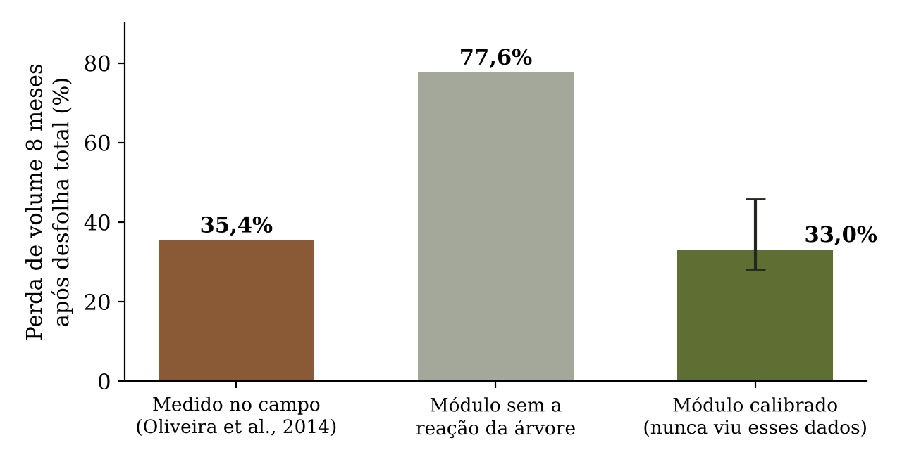

Resumo executivo · para a coorientadora Dra. Gabriela Cristina Costa Silva (UFRB)
Da fonte ao número: como a literatura guiou o módulo de desfolha
Bernardo Teixeira de Castro · TCC II, Engenharia Florestal, UFU · Orientador: Álvaro Augusto Vieira Soares · versão final v4, 02/11/2026
A tese em uma frase
Um módulo de desfolha para o modelo 3-PG, construído só com dados publicados, reproduz a perda de madeira de eucaliptos brasileiros nos meses após um ataque, quando a árvore pode reagir ao dano como mostram os experimentos fisiológicos. Ele ainda não reproduz a persistência dessa perda por anos.
33% × 35%
perda prevista × medida num experimento independente (Oliveira et al., 2014). Sem a reação da árvore, o módulo previa 78%.
50
referências no TCC: cada parâmetro e cada cenário tem origem citada, e o que não tem fonte é chamado de exploratório.
528
números do TCC recalculados automaticamente a partir dos resultados; todos conferem.
Como ler este resumo
Ele não lista as fontes ao lado dos resultados. Conta, em cinco capítulos, por que cada número entrou no modelo e qual fonte o justificou, incluindo os casos em que uma fonte corrigiu outra e em que uma fonte mostrou um limite do modelo.
A ressalva únicaMatrangolo et al. (2010) mediram perdas de 37,9 a 79,7% oito anos depois de desfolhas totais aos 56 dias; o módulo dá de 3,8 a 32,1%. O modelo não tem reservas de açúcar nem morte de ramos, e não deve ser usado para prever o fim da rotação nesse caso.
Capítulo 1
O chão firme: só se mexe no que já está medido
A primeira decisão foi não inventar o modelo. O 3-PG já existia (LANDSBERG; WARING, 1997) e já tinha uma implementação aberta e testada, o r3PG (TROTSIUK; HARTIG; FORRESTER, 2020). O módulo foi escrito sobre uma cópia dele, e a primeira prova foi mostrar que, sem ataque, nada muda.
Trotsiuk et al. (2020)r3PG v0.1.7
→
Serve de régua: o código do TCC tem de dar o mesmo resultado em todos os talhões sem ataque.
→
R² = 1,000308 talhões
Caldeira et al. (2020a)clone A1, rede TECHS
→
Parâmetros publicados de um clone brasileiro, ajustados com medições em várias regiões. Inclui o limite de temperatura do clone.
→
28,65 °Climite do A1
Binkley et al. (2017)rede TECHS
→
Espaçamento 3 × 3 m, solo do sítio vizinho e medidas de lenho e copa do A1 em Telêmaco Borba, usadas como referência.
→
1.111árvores por hectare
NASA POWER (2026)clima diário 2015–2024
→
O mesmo método de clima para os seis locais, do semiárido à Amazônia, para que as diferenças venham do clima e não da fonte.
→
572–1.862mm de chuva por ano
Poggio et al. (2021); Teixeira et al. (2021)SoilGrids e equação do ZARC
→
Onde não havia sítio TECHS por perto, a água do solo veio do mapa mundial de textura e de uma equação brasileira.
→
145–219mm de água no solo
O que esse cuidado comprouQuando o limite de temperatura publicado para o A1 foi passado em Imperatriz (31 dos 84 meses), o crescimento parou. Em vez de "ajustar" o clone, o TCC tratou esse caso como diagnóstico: a fonte diz até onde o clone vale, e o trabalho respeita isso.
Por que é importante para a bancaCom o chão firme, qualquer diferença nos resultados vem do dano, e não de um erro escondido. A primeira prova é de verificação; não se chama validação.
Capítulo 2
Uma fonte corrige outra: a copa grande demais
Para comparar clones, entraram três ajustes de Borges (2009) para híbridos do Cerrado mineiro. Nos resultados, eles pareciam muito mais "resistentes" à desfolha que o A1. A explicação não estava na genética: estava na copa. Com os valores de queda de folhas e de partição de Borges, as copas chegavam a índice de área foliar (IAF) de 8 a 11.
A rede TECHS (BINKLEY et al., 2017) mede de 3,0 a 3,8 em plantios clonais. Uma copa fechada demais quase não perde luz quando perde metade das folhas. Ou seja, um parâmetro irreal estava escondendo o próprio efeito que o TCC queria medir.
IAF do clone C5 entre 2 e 3 anos com o ajuste de Borges (2009) e com a queda de folhas e a partição da TECHS (CALDEIRA et al., 2020a). Faixa cor de terra: valores medidos na TECHS.
A decisãoTrocar só os dois parâmetros que fazem a copa (queda de folhas e partição para folhas) pelos da TECHS, e manter o resto de Borges. O IAF ficou entre 2,4 e 5,6, e a produtividade continuou plausível (36 a 65 m³/ha/ano).
O efeito em cadeiaCom copas realistas, os clones perderam quase o mesmo (C5 2,7% × A1 3,0%), e o teste independente do capítulo 5 passou a distinguir as duas versões do módulo. A copa densa escondia isso.
A versão anterior continua reproduzível no código (variável TCC_DOSSEL=borges). A limitação (g) do TCC declara que a copa desses clones vem de outro clone.
Capítulo 3
O tamanho do ataque: cada intensidade tem dono
Os cenários de dano não foram escolhidos por conveniência. Sempre que havia medição de campo publicada, a intensidade veio dela; quando não havia, o cenário foi chamado de exploratório.
Wilcken et al. (2003)psilídeo-de-concha
→
Relataram 20 a 30% de desfolha em urograndis.
→
25%desfolha
Freitas; Berti Filho (1994) apud Zanetti et al. (2014)formigas-cortadeiras
→
Desfolha total. O modelo precisa de alguma folha restante; 95% é o máximo usado nos cenários.
→
95%desfolha
Santos, Auer e Grigoletti Júnior (2001)murchas e cancros
→
Perdas de árvores de até 15%.
→
5 e 15%árvores mortas
Silveira et al. (1998) apud Silveira; Higashi (2003)ferrugem
→
Redução de diâmetro de plantas jovens infectadas; a perda de eficiência foi calibrada para reproduzi-la.
→
r calibrado−25 e −35% de DAP
Almeida et al. (2018); Barbosa et al. (2012)percevejo-bronzeado
→
Há efeito na fotossíntese, mas não há perda de campo publicada.
→
20 e 40%exploratório
E os números do desenho experimental?
Número
De onde vem
25 · 50 · 95%
Desenho da iniciação científica, ancorado nas intensidades acima; 50% é o cenário central.
7 anos
Idade de corte em que a perda é medida (84 meses), comparando cada talhão atacado com o mesmo talhão sem ataque.
1, 2 ou todo ano
Do ataque isolado ao surto recorrente, para separar o efeito da intensidade do efeito da repetição.
O que a história mostrouA repetição pesa mais que o ataque isolado: um ataque tirou de 1,6 a 15,2% do volume do A1; ataques todo ano, até 58 e 68%. Intensidade e frequência explicam quase toda a perda, mas o clima muda o tamanho dela.
Capítulo 4
A reação da árvore, fonte por fonte
Sem nenhuma reação, o módulo exagerava o prejuízo. A literatura fisiológica, quase toda de E. globulus na Austrália, descreve como a árvore reage. Cada parte da reação foi traduzida num parâmetro, e cada parâmetro tem uma fonte diferente. Esse é o centro do trabalho.
O erro que as fontes revelaramNo começo, γ era escolhido (0,5), e a calibração rodava com γ = 0 enquanto as simulações usavam 0,5. Levar Quentin et al. (2011) a sério obrigou a calibrar γ com o experimento deles e a refazer o ajuste de U e a com γ fixo.
Uma descoberta honestaDepois de uma desfolha total, quase não sobra folha no mês do ataque. Por isso o experimento de Bertulio não consegue definir U: o valor 1,18 vem da faixa da literatura. Quem é de fato calibrado com dado brasileiro é a, o investimento em refazer a copa.
Capítulo 5
As fontes como juízes
Depois de construir com umas fontes, o trabalho usou outras para julgar o resultado. A regra foi não usar no ajuste o que serviria de teste.
O juiz principal: Oliveira et al. (2014)
E. grandis em Mucuri-BA, desfolha total aos 6 meses, medição 8 meses depois. Não entrou em nenhum ajuste.

Perda de volume oito meses depois da desfolha total; barra preta: faixa de 90% da calibração.
O erro médio (volume, diâmetro e altura) caiu de 34,3 para 3,2 pontos. As desfolhas parciais, sem efeito significativo no campo, deram pouca perda também no modelo.
Os outros juízes
Fonte
O que mediu
O que o módulo deu
Bertulio et al. (2008), clone de teste
urocam fora do ajuste
erro de 20,3 → 7,5 p.p.
Bertulio et al. (2008), validação cruzada
cada medição escondida
erro de 15,7 → 4,3 p.p.
Eyles et al. (2016)
área foliar igual ao controle em 12 semanas
copa de volta em até 2 meses
Barry et al. (2012)
área foliar sem diferença aos 18 meses
−0,2% (sem reação: 6,6%)
Alves et al. (2007)
biomassa de 51 a 132 t/ha em Araripina
57 a 71 t/ha
Matrangolo et al. (2010)
37,9 a 79,7% aos 92 meses
3,8 a 32,1%: não reproduz
Por que manter o juiz contrárioMatrangolo e Oliveira, juntos, contam uma história coerente: o módulo acerta o curto prazo e erra a persistência. O próprio CABALA falha em desfolhas muito intensas com morte de ramos (BATTAGLIA et al., 2011). Esconder Matrangolo deixaria o trabalho mais bonito e menos verdadeiro.
Síntese
O que as fontes permitem e o que não permitem afirmar
Afirmação
Sustentada por
Força
O código é o 3-PG, e o dano é aplicado como descrito
r3PG (Trotsiuk et al., 2020); 49 testes
verificação
Repetir o ataque custa muito mais que um ataque isolado
simulações com clones publicados; coerente com a literatura
simulação
A árvore compensa parte do dano
Quentin et al. (2011); Bertulio et al. (2008); Oliveira et al. (2014)
teste independente
As folhas voltam em meses
Eyles et al. (2016); Barry et al. (2012)
coerência qualitativa
A perda após desfolha total no primeiro ano persiste por anos
Matrangolo et al. (2010)
o módulo não reproduz
Os resultados valem para os seis locais simulados
nenhum experimento de desfolha nesses locais
não validado
Pontos para conversar
A copa dos clones de Borges. Trocar a queda de folhas e a partição pelas da TECHS é defensável para a banca, ou existe IAF publicado para esses clones?
U vindo da literatura. Basta declarar que a desfolha total não define U, ou vale buscar um experimento brasileiro de desfolha parcial com fotossíntese medida?
A leitura de Matrangolo. Reservas de açúcar e morte de ramos são a melhor explicação para a perda que persiste?
Dados de campo na Bahia. Oliveira et al. (2014) é de Mucuri-BA. Há outros experimentos de desfolha publicados na região que sirvam de teste?
Perspectiva. A mesma cadeia de simulações com clima futuro, para medir perda e tempo de recuperação em cada bioma, é um bom caminho para o mestrado (RESILIA, ODS 15)?
Todos os números deste resumo estão no TCC II (versão final v4, 02/11/2026) ou nos arquivos de resultado auditados (528 itens). As referências completas estão no TCC. Material de apoio: Guia ilustrado do TCC II, passo a passo, e a plataforma Akademia Florestal.